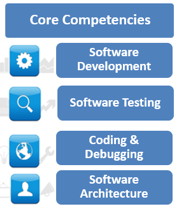
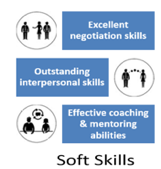
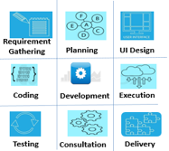
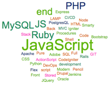

A versatile, high-energy technocrat with the distinction of executing prestigious projects of large magnitude within strict time schedule
A competent professional with over 15 years of experience in:




Notting Hill Genesis is one of the largest housing associations in London and the south-east. It is association to provide homes for low-income households in London and the south-east, is as strong today as it was more than 50 years ago. My Responsible to develop and maintain NHG Notting Hill Workwise Front End with React/ Redux. We use Azure infrastructure to manage our servers and code which includes Agile practices. Workwise tool is used by the household residents and Housing Officers to maintain its housing units.
Project(s):
Project(s):
Responsible to develop and maintain Healthcare Auditing and Compliance SaaS (Software as service) tool. Project is handled with Agile framework of Epic, Feature, User Stories and Tasks. Auditing SaaS service is responsible to do the retrospective auditing. Compliance SaaS service is used for the maintain compliance and incidents in the healthcare organization. Played a key role to understand Product Manager's use case to deliverable feature to the SaaS customers such as City clinic and Cape town health and many more.
Compliance Manager is healthcare support product that contains customized workflows, AAPC-certified training and real-time reporting. Provides an entire compliance program for Healthcare organisations in one place, train employees and manages program in one easy-to-use application.
Healthicity Platform portal is a centralized tools for authentication and client maintenance of all Healthicity applications such Audit Manager, Compliance Manager and Provider Analytics. Product maintains the client and its user information such as licensing, trial, and geographical information. Authentication is performed for all products of Healthicity.
Healthicity Audit Manager is an all-in-one audit management solution to help simplify medical documentation and coding reviews. Audit Manager combines both workflow management features and sophisticated auditing tools to streamline your audit process and ensure accurate results.
Project(s):
Trendin.com is the official online store for MFL brands from Allen Solly, Louis Philippe, Pantaloons, People, Peter England and VanHeusen. With a product range that caters to women, men and kids, Trendin.com is a one-stop Online Shopping destination for consumers looking for fast fashion as well as premium segments.
Module lead for development and testing for the tools that are required for the operations of Trendin website. Provides support to backend/ frontend functions for website development and maintenance and ensures the smooth integration of the e-commerce system with all other systems.
For ensuring superior customer experience while using the website, it is imperative to maintain the quality of the services that the portal provides and fix any issues that crop up as soon as possible. To ensure best in the class user experience on a website, it needs to provide a digital environment that is both functionally efficient and attractive to navigate through and explore.
Project(s):
Tools Development for internal software installation using python, perl, shell script. Internal Portal using PHP to maintain defects. Oracle Enterprise Manager 12c functional area maintenance. Oracle Fusion Middleware server installation maintenance.
Under this project, Oracle Software including Database, Middleware and Applications are managed along with integration of Sun's OpCenter product. In this project, Oracle's virtualization infrastructure is managed and Cloud Management solution is offered several clients such as HDFC Bank, Bank of America and more. Apart from administration of products, the product also provides support for mass-deployment of Oracle Products.
Project(s):
Responsible for designing, coding and debugging applications in various scripting languages i.e. php, perl and supporting the same. Documenting features, technical specifications & infrastructure requirements of projects Application testing and development and to deploy on Linux. Web server installation & configuration: Apache, Microsoft IIS Provide senior-level application development expertise to team responsible for rewriting and migrating platform to MySQL and PHP. Finding the limitations on existing applications and migrated to updated technologies i.e.: html and JavaScript chars to Rich Internet Applications via Adobe Flex. Problem diagnosing and solving skills on various applications. Development of company-wide quality dashboard for senior management Develop tools and application using the W3C Web standard guidelines. Analysing and developing ANSI-SQL and Stored Procedures for the web application Automating, monitoring and maintaining the remote Servers of various platform using perl and shell scripts.
Maintaining the intranet tool system portal, it is a ticketing system which is used to assign the job the internal team members. Guiding development team to creating applications using SMARTY, PHP, MySQL. Evaluate industry trends, open source project innovations and drive such adoptions in the company.
Under IPM Project Management project, server automation like OS (Linux/UNIX and Window) were managed and each application that is around 20 servers approximately would go more than 100.
In Ad Hoc Reporting Tool 1.0 produced high level views of server utilization across Verizon business and Verizon telecom. This user controlled tool was useful for System Engineers, Application Teams, Support Groups and Management to view resource utilization across multiple platform, components and other areas of interest.
In Ad Hoc Reporting Tool 1.0 produced high level views of server utilization across Verizon business and Verizon telecom. This user controlled tool was useful for System Engineers, Application Teams, Support Groups and Management to view resource utilization across multiple platform, components and other areas of interest.
Verizon.com Executive Reporting application is used to track utilization of servers for the New York FiOS push with attention at the highest corporate levels and needs to be handled with the priority consistent with that level of Executive visibility from all participants. his tool is entirely based on Rich Internet Application (RIA). Hence end user feels like a desktop tool
Project(s):
Discussing with technical lead to identify the software project requirements. Communicating with Web designer to get the html wireframe and graphic files. Developing the software as per the requirement and the wireframe design flow.
PHP and HTML Coding to convert requirement and specification for obtaining a working solution PDF PHP library is used during the development to create the dynamic PDF files for software application. Teamwork with all technical stake holders like technical lead and designer for the collaborative work.
Debugging is in parallel with coding to identify the software bugs. Software get verified with technical lead and business for the approval. The software is created to convert the paper work and process flow to fully functional web-based software solution. Managing work using the SDLC waterfall model and take the necessary initiative by identifying risk of delivery.